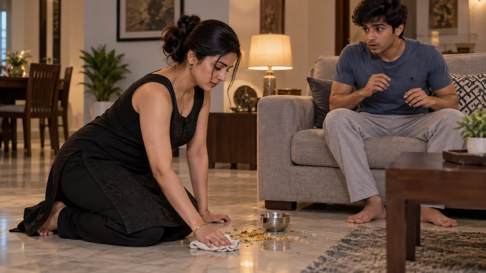
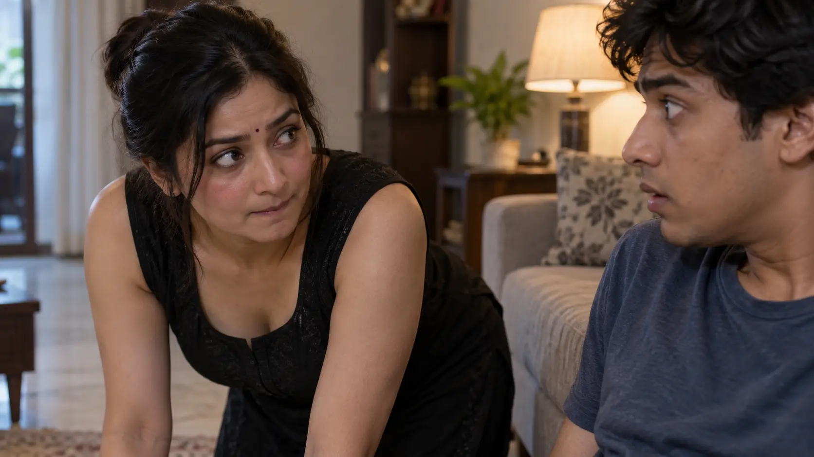

L208–213
The mirror decisionCompliment, self-image and yesterday's question converge as she removes the dupatta.
GENERATED_PENDING_REVIEW · self-awareness · L208–213
Sequence: mirror choice → deliberate test → mutual eye contact → aftermath · L208–225.
Compliment, self-image and yesterday's question converge as she removes the dupatta.
A wide side angle establishes her deliberate return, his position and his startled reaction without graphic framing.

The decisive confirmation is mutual eye contact, followed by Chotu's immediate exit.

Alone, Dhika covers her face as disbelief, blush, shyness and excitement overwhelm her.
E01-P12-E040 mirror moment mein compliment memory + prior curiosity ko one deliberate visual-test setup mein convert karta hai. E041 Chotu initially missing dupatta ko accidental samajhta hai; Dhika deliberate test posture follow karti hai; source approximate visibility describe karta hai aur Chotu look karta hai. E042 eye contact se gaze mutually noticed hoti hai; Chotu payment lekar immediately leaves; Dhika strong private excitement/blush/shyness experience karti hai.Nahi. L213–217 deliberate test/urge aur knowingly no-dupatta cleaning establish karte hain.
Haan. L218 explicitly confirms his view and stunned gaze.
Haan; L220–222 mein eyes meet hoti hain.
Nahi. Chotu paise lekar turant nikal jaata hai.
E01-P12-E040 mirror moment mein compliment memory + prior curiosity ko one deliberate visual-test setup mein convert karta hai. E041 Chotu initially missing dupatta ko accidental samajhta hai; Dhika deliberate test posture follow karti hai; source approximate visibility describe karta hai aur Chotu look karta hai. E042 eye contact se gaze mutually noticed hoti hai; Chotu payment lekar immediately leaves; Dhika strong private excitement/blush/shyness experience karti hai.Dhika: self-questioning → excited choice → nervous follow-through → eye-contact confirmation → overwhelmed aftermath.
Chotu: crush → assumption of innocent omission → stunned gaze → exposed awareness → flight.
E01-P12-E040 mirror moment mein compliment memory + prior curiosity ko one deliberate visual-test setup mein convert karta hai. E041 Chotu initially missing dupatta ko accidental samajhta hai; Dhika deliberate test posture follow karti hai; source approximate visibility describe karta hai aur Chotu look karta hai. E042 eye contact se gaze mutually noticed hoti hai; Chotu payment lekar immediately leaves; Dhika strong private excitement/blush/shyness experience karti hai.Relationship history only. Character knowledge belongs in Knowledge / Secrecy; actions/observers belong in Action / Visibility.
| Relationship | Previous verified state | Current Part delta | Cumulative state through EPISODE 01 |
|---|---|---|---|
| Dhika ↔ John | Warm marriage retained; John is temporarily absent for work, with no relationship rupture. | HOLD / UNCHANGED · No new relationship evidence in Part 12; retain the last verified state. | Warm marriage retained; John is temporarily absent for work, with no relationship rupture. |
| Dhika ↔ Pappu | Stable, hands-on mother-child caregiving remains active. | HOLD / UNCHANGED · No new relationship evidence in Part 12; retain the last verified state. | Stable, hands-on mother-child caregiving remains active. |
| Dhika ↔ Students (general) | Positive teacher-student goodwill is reaffirmed; specific Bantu/Bobby dynamics are tracked separately. | HOLD / UNCHANGED · No new relationship evidence in Part 12; retain the last verified state. | Positive teacher-student goodwill is reaffirmed; specific Bantu/Bobby dynamics are tracked separately. |
| Dhika ↔ Aunty | Maternal-neighbour trust and active childcare cooperation are reaffirmed. | HOLD / UNCHANGED · No new relationship evidence in Part 12; retain the last verified state. | Maternal-neighbour trust and active childcare cooperation are reaffirmed. |
| Dhika ↔ Uncle | Conscious trust remains intact for Dhika; the reader-known hidden breach remains undisclosed and unresolved. | HOLD / UNCHANGED · No new relationship evidence in Part 12; retain the last verified state. | Conscious trust remains intact for Dhika; the reader-known hidden breach remains undisclosed and unresolved. |
| John ↔ Aunty/Uncle | Near-family neighbour/guardian relationship; John is not shown knowing Uncle’s concealed attraction. | HOLD / UNCHANGED · No new relationship evidence in Part 12; retain the last verified state. | Near-family neighbour/guardian relationship; John is not shown knowing Uncle’s concealed attraction. |
| Pappu ↔ Aunty/Uncle | Established neighbour-caregiver bond is actively reaffirmed. | HOLD / UNCHANGED · No new relationship evidence in Part 12; retain the last verified state. | Established neighbour-caregiver bond is actively reaffirmed. |
| Aunty ↔ Uncle | Marriage remains intact on-page; Uncle-side secrecy now also covers the Part 3 incident. | HOLD / UNCHANGED · No new relationship evidence in Part 12; retain the last verified state. | Marriage remains intact on-page; Uncle-side secrecy now also covers the Part 3 incident. |
| Dhika ↔ Bantu | Part 4 relationship state remains HOLD / UNCHANGED; the memory only reaffirms that Dhika likes compliments. | HOLD / UNCHANGED · No new relationship evidence in Part 12; retain the last verified state. | Part 4 relationship state remains HOLD / UNCHANGED; the memory only reaffirms that Dhika likes compliments. |
| Dhika ↔ Bobby | Teacher-student bond now carries a private visibility/proximity/contact history; romance or blanket permission is not established. | HOLD / UNCHANGED · No new relationship evidence in Part 12; retain the last verified state. | Teacher-student bond now carries a private visibility/proximity/contact history; romance or blanket permission is not established. |
| Bantu ↔ Bobby | Twin bond remains intact but gains competition, jealousy and a withheld-information layer. | HOLD / UNCHANGED · No new relationship evidence in Part 12; retain the last verified state. | Twin bond remains intact but gains competition, jealousy and a withheld-information layer. |
| Dhika ↔ Sharmi | Longstanding best-friend/colleague bond with playful, high-trust familiarity. | HOLD / UNCHANGED · No new relationship evidence in Part 12; retain the last verified state. | Longstanding best-friend/colleague bond with playful, high-trust familiarity. |
| Sharmi ↔ Raj | Married couple; only the referenced compliment context is relevant in E01, with no additional Raj behaviour shown. | HOLD / UNCHANGED · No new relationship evidence in Part 12; retain the last verified state. | Married couple; only the referenced compliment context is relevant in E01, with no additional Raj behaviour shown. |
| Dhika ↔ Raj | Reference-only connection through Sharmi; no affair, active relationship or broader Raj feelings are established. | HOLD / UNCHANGED · No new relationship evidence in Part 12; retain the last verified state. | Reference-only connection through Sharmi; no affair, active relationship or broader Raj feelings are established. |
| Dhika ↔ Her Mother | Off-screen mother-daughter family/advice relationship; no live E01 interaction is shown. | HOLD / UNCHANGED · No new relationship evidence in Part 12; retain the last verified state. | Off-screen mother-daughter family/advice relationship; no live E01 interaction is shown. |
| Dhika ↔ Bindu Maami | Ongoing practical store relationship; Maami remains the operational link to Chotu’s delivery work. | HOLD / UNCHANGED · No new relationship evidence in Part 12; retain the last verified state. | Ongoing practical store relationship; Maami remains the operational link to Chotu’s delivery work. |
| Dhika ↔ Chotu/Babu | Outward trust/familial framing remains; inward meaning becomes asymmetric because Chotu has a private crush while Dhika states trust, not a crush. | CHANGED · L208–225: Dhika deliberately tests whether Chotu will look; he does, their eyes meet, and both know the gaze occurred; he leaves immediately. | Episode-end: outward Didi/Chotu familiarity remains the social shell, but shared awareness of the gaze is now established. No touch, confession, spoken pact or future permission is established. |
| Chotu ↔ Pappu | Warm playful familiarity is reaffirmed. | HOLD / UNCHANGED · No new relationship evidence in Part 12; retain the last verified state. | Warm playful familiarity is reaffirmed. |
| Chotu ↔ Mother/Family | Ongoing mother/family connection remains active alongside his work responsibilities. | HOLD / UNCHANGED · No new relationship evidence in Part 12; retain the last verified state. | Ongoing mother/family connection remains active alongside his work responsibilities. |
| Bindu Maami ↔ Chotu | Operational store-worker link remains active. | HOLD / UNCHANGED · No new relationship evidence in Part 12; retain the last verified state. | Operational store-worker link remains active. |
| Range | Verified state |
|---|---|
| L208–214 | Private choice and no-dupatta return. |
| L215–219 | Chotu opposite; bend/cleaning; confirmed intimate view and gaze. |
| L220–223 | Eye contact confirms awareness; Chotu leaves. |
| L224–225 | Dhika alone; explicit bodily excitement. |
E01-P12-E040 mirror moment mein compliment memory + prior curiosity ko one deliberate visual-test setup mein convert karta hai. E041 Chotu initially missing dupatta ko accidental samajhta hai; Dhika deliberate test posture follow karti hai; source approximate visibility describe karta hai aur Chotu look karta hai. E042 eye contact se gaze mutually noticed hoti hai; Chotu payment lekar immediately leaves; Dhika strong private excitement/blush/shyness experience karti hai.Dhika controls the clothing and posture setup. Chotu's gaze is confirmed, but neither speaks consent or crosses into contact.
E01-P12-E040 mirror moment mein compliment memory + prior curiosity ko one deliberate visual-test setup mein convert karta hai. E041 Chotu initially missing dupatta ko accidental samajhta hai; Dhika deliberate test posture follow karti hai; source approximate visibility describe karta hai aur Chotu look karta hai. E042 eye contact se gaze mutually noticed hoti hai; Chotu payment lekar immediately leaves; Dhika strong private excitement/blush/shyness experience karti hai.Dhika now knows the test worked. Chotu knows he was seen looking. He may not know it was staged; she does not know his “little crush” narration.
E01-P12-E040 mirror moment mein compliment memory + prior curiosity ko one deliberate visual-test setup mein convert karta hai. E041 Chotu initially missing dupatta ko accidental samajhta hai; Dhika deliberate test posture follow karti hai; source approximate visibility describe karta hai aur Chotu look karta hai. E042 eye contact se gaze mutually noticed hoti hai; Chotu payment lekar immediately leaves; Dhika strong private excitement/blush/shyness experience karti hai.Episode arc: accidental ambiguity → private exciting recall → compliment/trust → deliberate test → confirming eye contact → separate retreat.
Keep the source's breathless ellipses and self-alienation (“This was not her”) in interpretation. Visuals should privilege gaze and reaction over anatomy.
E01-P12-E040 mirror moment mein compliment memory + prior curiosity ko one deliberate visual-test setup mein convert karta hai. E041 Chotu initially missing dupatta ko accidental samajhta hai; Dhika deliberate test posture follow karti hai; source approximate visibility describe karta hai aur Chotu look karta hai. E042 eye contact se gaze mutually noticed hoti hai; Chotu payment lekar immediately leaves; Dhika strong private excitement/blush/shyness experience karti hai.| Hook | Status |
|---|---|
| Will Dhika act on curiosity? | YES—one visual test. |
| Will Chotu look? | YES—confirmed. |
| Will they discuss it? | OPEN beyond Episode 01. |
E01-P12-E040 mirror moment mein compliment memory + prior curiosity ko one deliberate visual-test setup mein convert karta hai. E041 Chotu initially missing dupatta ko accidental samajhta hai; Dhika deliberate test posture follow karti hai; source approximate visibility describe karta hai aur Chotu look karta hai. E042 eye contact se gaze mutually noticed hoti hai; Chotu payment lekar immediately leaves; Dhika strong private excitement/blush/shyness experience karti hai.E01-P12-E040 mirror moment mein compliment memory + prior curiosity ko one deliberate visual-test setup mein convert karta hai. E041 Chotu initially missing dupatta ko accidental samajhta hai; Dhika deliberate test posture follow karti hai; source approximate visibility describe karta hai aur Chotu look karta hai. E042 eye contact se gaze mutually noticed hoti hai; Chotu payment lekar immediately leaves; Dhika strong private excitement/blush/shyness experience karti hai.Episode-end positions: Chotu has left with money; Dhika alone on floor; Pappu still asleep; John still absent.
Emotional residue: Chotu stunned/withdrawn; Dhika excited, shy and shocked by herself.
Knowledge ceiling: shared gaze known; motives and crush remain private.
Future guardrail: do not backfill touch, confession or a spoken pact into Episode 01.